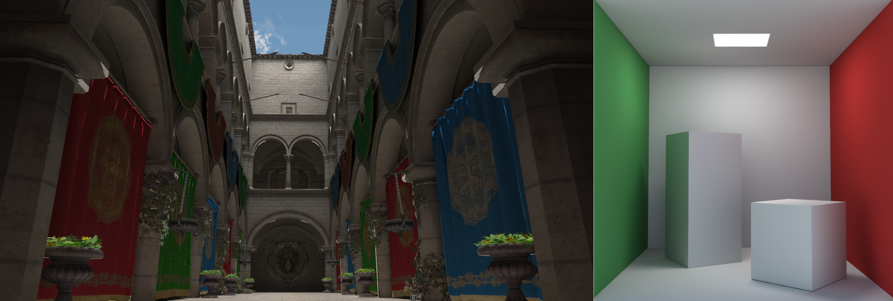
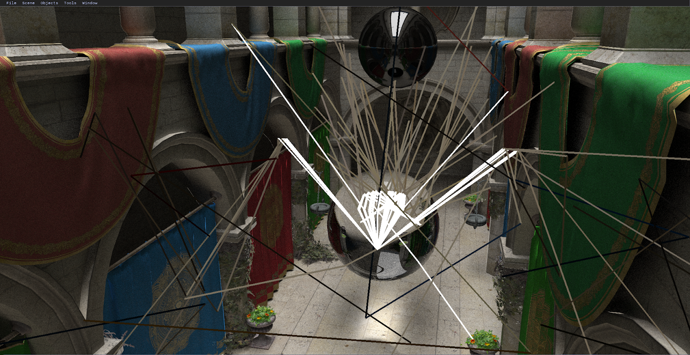
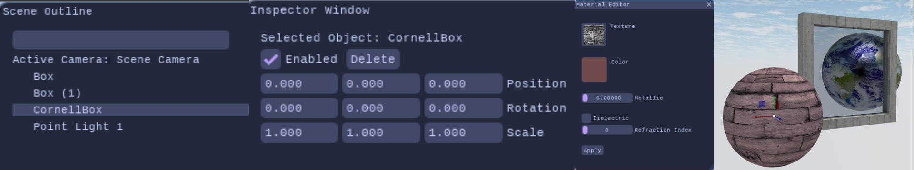

<!DOCTYPE html>
<html lang ="en">
      <head>
            <link rel="stylesheet" href="{{ '/assets/css/style.css?v=' | append: site.github.build_revision | relative_url }}">
      </head>
</html>
<body>
      <h1 class="page-links"><strong>Home</strong> | <a href="gallery.html">Gallery</a></h1>
      

      <h1>About AnitoTracer</h1>
      <p>
             AnitoTracer is an in-house real-time and interactive ray tracing 3D scene editor that can potentially be used by 
             beginner 3D level designers and game designers in exploring how their scenes would appear in a ray traced environment. 
             Its code is open source to allow for other artists and programmers to freely extend the capabilities of the ray tracer to suit their needs. 
      </p>

      <h1>Visualizing 3D Ray-Traced Scenes with an In-House Interactive Ray Tracer</h1>
      <p>The project is being developed by undergraduate students in De La Salle University as part of their capstone. The members of Waffle Shader Studios are as follows:</p>
      <ul>
        <li>Kate Nicole Young</li>
        <li>Shane Laurenze Cablayan</li>
        <li>Marcus Rene Levin Leocario</li>
        <li>Zachary Gadjiel Breinard Que</li>
        <li>Andre Vito Valdecantos</li>
      </ul>
      <p>Under the advisory of Neil Patrick Del Gallego, Ph.D.</p>
      <h3>Abstract</h3>
      <p>
            Ray tracing is one of the standard 3D rendering practices in video games and computer graphics due to its capability to produce photorealistic renders. 
            The existing 3D scene editors in the industry, like Unity, Unreal, and Blender, do not support real-time raytracing interactivity, and users would have 
            to alter the editor's pipeline settings in order to render a raytraced scene. The study shows that the developed in-house real-time ray tracing 3D engine 
            received a Standard Usability (SUS) Score of 68.33, indicating that the engine is usable in its current form and provides a solid foundation for further 
            development. There is potential for improvement in areas such as optimization, stability, and pixel-perfect object picking. Additionally, as the in-house 
            ray tracer, AnitoTracer, is open source, artists and programmers can freely extend the capabilities of the base ray tracer to further improve on it and suit 
            their needs. 

      </p>
      <h1>Key Features</h1>
      <h2>Ray Tracing</h2>
      
      <p>
            AnitoTracer is a ray tracing engine that is designed to replicate how light behaves in the real world by simulating rays that bounce or pass through materials 
            of 3D models in a scene, producing highly realistic images with detailed reflections, refractions, and shadows.
      </p>
      <h2>Ray Visualization</h2>
      
      <p>
            AnitoTracer includes a built-in ray visualization feature that depicts how rays travel through a scene, highlighting their paths as they interact with various materials,
            bounce off different surfaces, and how it ultimately contributes to the final color rendered on the screen.
      </p>
      <h2>Scene Editor</h2>
      
      <p>
            AnitoTracer has an integrated scene editor that enables users to load in scenes, modify objects, adjust materials, and create custom lighting setups allowing for easy
            experimentation of raytraced rendering.
      </p>

      <h1>Download</h1>
      <p>
        You can download the software from this project's <a href="https://drive.google.com/file/d/1koymLbZgpnqmexP2hAP4qkE3cz2nphTD/view?usp=sharing" target="_blank">Google Drive Link</a>.
      </p>
</body>
